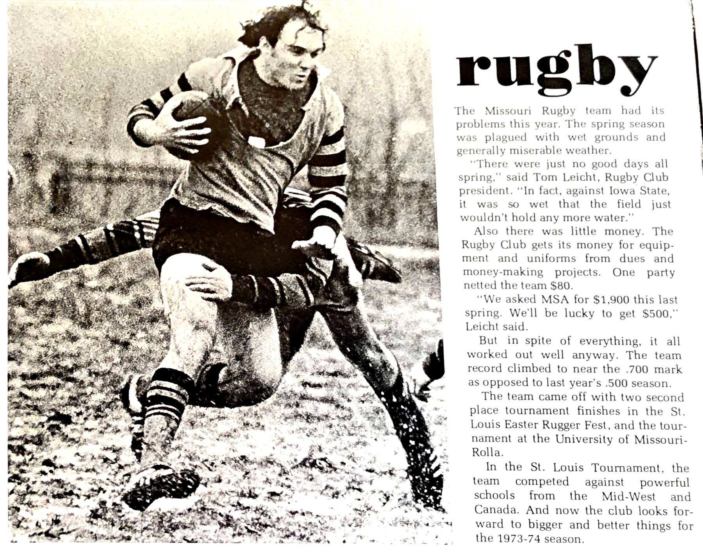
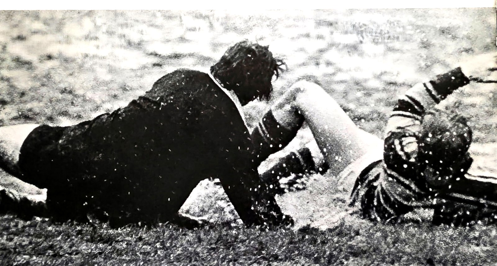
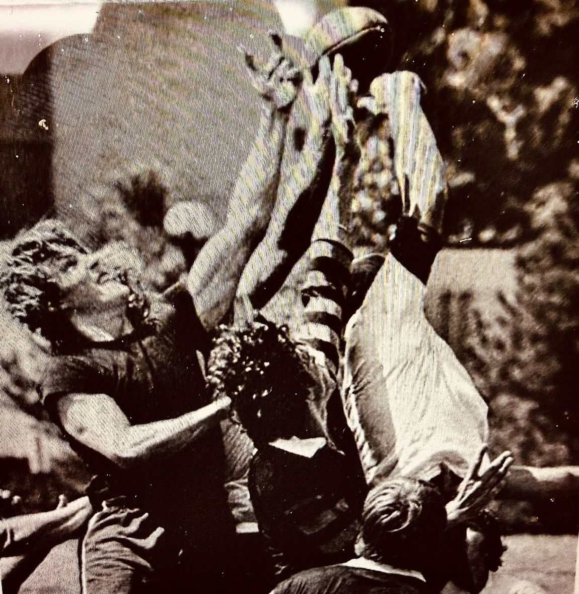

Photographs and Clippings from the Archive
The University of Missouri yearbook's page on the club, and the two photographs that ran with it.


The Missouri Rugby team had its problems this year. The spring season was plagued with wet grounds and generally miserable weather.
“There were just no good days all spring,” said Tom Leicht, Rugby Club president. “In fact, against Iowa State, it was so wet that the field just wouldn't hold any more water.”
Also there was little money. The Rugby Club gets its money for equipment and uniforms from dues and money-making projects. One party netted the team $80.
“We asked MSA for $1,900 this last spring. We'll be lucky to get $500,” Leicht said.
But in spite of everything, it all worked out well anyway. The team record climbed to near the .700 mark as opposed to last year's .500 season.
The team came off with two second place tournament finishes in the St. Louis Easter Rugger Fest, and the tournament at the University of Missouri-Rolla.
In the St. Louis Tournament, the team competed against powerful schools from the Mid-West and Canada. And now the club looks forward to bigger and better things for the 1973-74 season.
Transcribed word for word from the yearbook page. It looks back on the spring of 1973 and closes by looking ahead to the season that followed, so it is a record of this season written on the eve of the 1973–74 Big Eight championship year.
A photograph kept by the second-row forward who joined the club in 1971.

Photos, programs, clippings, scorebooks — we want to see them.
The fall 1972 record is still missing entirely, and the roster is far from complete. Anything you have helps.
Share Your Photos